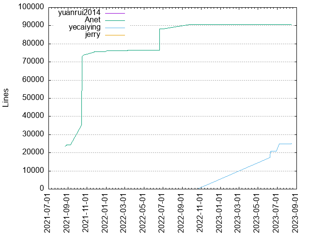
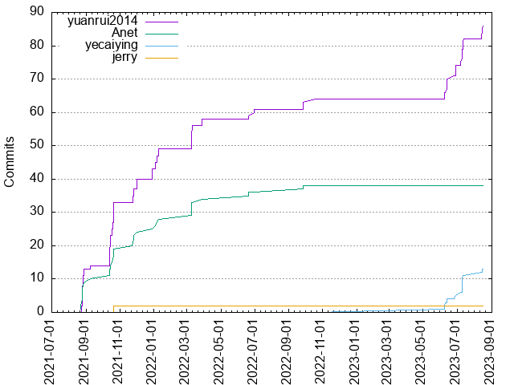

Authors
| Author | Commits (%) | + lines | - lines | First commit | Last commit | Age | Active days | # by commits |
|---|
| yuanrui2014 | 86 (61.87%) | 2 | 2 | 2021-08-24 | 2023-08-16 | 721 days, 20:38:22 | 39 | 1 |
| Anet | 38 (27.34%) | 90755 | 17813 | 2021-08-23 | 2022-09-27 | 400 days, 5:01:17 | 26 | 2 |
| yecaiying | 13 (9.35%) | 25005 | 21928 | 2023-06-08 | 2023-08-15 | 68 days, 3:21:32 | 9 | 3 |
| jerry | 2 (1.44%) | 0 | 0 | 2021-10-21 | 2021-10-21 | 0:03:42 | 1 | 4 |


| Month | Author | Commits (%) | Next top 5 | Number of authors |
|---|
| 2023-08 | yuanrui2014 | 4 (66.67% of 6) | yecaiying | 2 |
| 2023-07 | yuanrui2014 | 8 (57.14% of 14) | yecaiying | 2 |
| 2023-06 | yuanrui2014 | 10 (66.67% of 15) | yecaiying | 2 |
| 2022-10 | yuanrui2014 | 1 (100.00% of 1) | | 1 |
| 2022-09 | yuanrui2014 | 2 (50.00% of 4) | Anet | 2 |
| 2022-07 | yuanrui2014 | 1 (100.00% of 1) | | 1 |
| 2022-06 | yuanrui2014 | 2 (50.00% of 4) | Anet | 2 |
| 2022-03 | yuanrui2014 | 9 (60.00% of 15) | Anet | 2 |
| 2022-01 | yuanrui2014 | 6 (66.67% of 9) | Anet | 2 |
| 2021-12 | yuanrui2014 | 6 (75.00% of 8) | Anet | 2 |
| 2021-11 | yuanrui2014 | 4 (50.00% of 8) | Anet | 2 |
| 2021-10 | yuanrui2014 | 19 (63.33% of 30) | Anet, jerry | 3 |
| 2021-09 | yuanrui2014 | 1 (50.00% of 2) | Anet | 2 |
| 2021-08 | yuanrui2014 | 13 (59.09% of 22) | Anet | 2 |
| Year | Author | Commits (%) | Next top 5 | Number of authors |
|---|
| 2023 | yuanrui2014 | 22 (62.86% of 35) | yecaiying | 2 |
| 2022 | yuanrui2014 | 21 (61.76% of 34) | Anet | 2 |
| 2021 | yuanrui2014 | 43 (61.43% of 70) | Anet, jerry | 3 |
| Domains | Total (%) |
|---|
| users.noreply.github.com | 86 (61.87%) |
|---|
| qq.com | 38 (27.34%) |
|---|
| nekeck.com | 13 (9.35%) |
|---|
| nekteck.com | 2 (1.44%) |
|---|